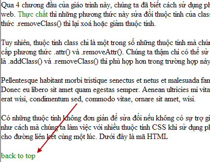

Bạn đã từng xem ảo thuật và thấy những ảo thuật gia có thể với tay lên không trung và cho xuất hiện một bó hoa, jQuery cũng có thể tạo ra các thành phần, thuộc tính, và cả chữ trên một trang web giống với cách mà ảo thuật gia trình diễn vậy. Hơn nữa, jQuery cũng có thể làm biến mất tất cả những thứ nó tạo ra. Và chúng ta cũng có thể lấy bó hoa kia và biến nó thành < div class=’magic’ id=’flowerToDove’ >Dove
Qua 4 chương đầu của giáo trình này, chúng ta đã biết cách sử dụng phương thức .addClass() và .removeClass() để làm thay đổi giao diện của các thành phần trên trang web. Thực chất thì những phương thức này sửa đổi thuộc tính của class. Phương thức .addClass() thì tạo ra hoặc thêm vào cho thuộc tính, trong khi phương thức .removeClass() thì lại xoá hoặc giảm thuộc tính. Còn có một phương thức nữa là .toggleClass(), nó có thể vừa loại bỏ và vừa thêm vào một class. Như thế với 3 phương thức trên chúng ta đã có những công cụ đủ mạnh để làm việc với class.
Tuy nhiên, thuộc tính class chỉ là một trong số những thuộc tính mà chúng ta cần dùng tới hoặc thay đổi. Ví dụ, id, rel và href. Để sửa đổi những thuộc tính này, jQuery cung cấp phương thức .attr() và .removeAttr(). Chúng ta thậm chí có thể sử dụng .attr() và .removeAttr() để sửa đổi thuộc tính class. Nhưng phương thức chuyên dụng là .addClass() và .removeClass() thì phù hợp hơn trong trường hợp này bởi vì nó có thể xử lý chính xác những trường hợp một phần tử có nhiều class như: < div class=’first second’>.
Có những thuộc tính không đơn giản để sửa đổi nếu không có sự trợ giúp của jQuery. Hơn nữa, jQuery cho phép chúng ta sửa đổi nhiều thuộc tính cùng một lúc, tương tự như cách mà chúng ta làm việc với nhiều thuộc tính CSS khi sử dụng phương thức .css() ở chương 4.
Ở ví dụ này, chúng ta có thể dễ dàng thiết lập id, rel và thuộc tính title cho đường liên kết cùng một lúc. Dưới đây là mã HTML
Bây giờ chúng ta có thể đi qua từng đường liên kết trong thẻ
Cách này có thể dùng được bởi vì chúng ta muốn giá trị của thuộc tính rel vừa tạo là như nhau ở tất cả các đường liên kết. Tuy nhiên, thường thì những thuộc tính ta thêm vào hoặc thay đổi phải có giá trị khác nhau cho mỗi một thành phần. Ví dụ với bất cứ tài liệu nào, mỗi một id đều phải là duy nhất nếu ta muốn mã javaScript của mình làm việc theo ý muốn. Để tạo được một id duy nhất cho mỗi đường liên kết, chúng ta không sử dụng phương pháp ở trên nữa mà thay vào đó sử dụng phương thức .each().
Phương thức .each() hoạt động như vòng lặp hiện, nó có nguyên lý hoạt động như vòng lặp for nhưng thuận tiện hơn. Người ta thường sử dụng phương thức này khi mà đoạn mã chúng ta sử dụng trên mỗi phần tử của bộ chọn quá phức tạp cho vòng lặp ẩn. Trong trường hợp này, hàm ẩn của phương thức .each() được gán một số index để chúng ta có thể gắn nó cho mỗi id. Đối số index này hoạt động như một bộ đếm, bắt đầu từ số 0 cho đường liên kết đầu tiên và tăng dần 1 đơn vị cho mỗi đường liên kết kế tiếp. Cho nên khi ta thiết lập id thành ‘izwebz-’ + index, thì đường liên kết đầu tiên sẽ có id là izwebz-0, đường liên kết thứ 2 sẽ làizwebz -1, v.v..
Chúng ta sẽ sử dụng thuộc tính title để cho người đọc biết thêm thông tin về đường liên kết ở Izwebz. Ở ví dụ dưới đây, tất cả các đường liên kết đều hướng tới izwebz.com. Tuy nhiên, chúng ta nên để cho biểu thức bộ chọn được cụ thể hơn, chúng ta chỉ nên chọn những đường liên kết có chứa izwebz trong phần href. Để phòng sau này chúng ta lại thêm những đường liên kết khác không phải là izwebz.
Ở đây có điểm bạn cần chú ý là chúng ta đã lưu lại từ khoá $(this) vào một biến gọi là $thisLink, bởi vì chúng ta sử dụng nó nhiều hơn một lần.
Với cả 3 giá trị thuộc tính được thiết lập như trên, bây giờ đường liên kết của chúng ta sẽ có dạng như sau:
Từ khi bắt đầu làm quen với jQuery, chúng ta đã biết cách sử dụng hàm $() để tiếp cận các thành phần trên trang. Thực tế thì hàm này là trọng tâm của thư viện jQuery, bởi vì nó được gọi mỗi khi chúng ta cần gán một hiệu ứng, sự kiện hoặc thuộc tính cho một phần tử.
Từ khi bắt đầu làm quen với jQuery, chúng ta đã biết cách sử dụng hàm $() để tiếp cận các thành phần trên trang. Thực tế thì hàm này là trọng tâm của thư viện jQuery, bởi vì nó được gọi mỗi khi chúng ta cần gán một hiệu ứng, sự kiện hoặc thuộc tính cho một phần tử.
Chú ý: Bạn cũng nên chú ý khi tạo ra những hiệu ứng để cải thiện giao diện hoặc nội dung phụ thuộc vào javaScript. Bởi vì không phải ai cũng bật javaScript, nên những thông tin quan trọng phải được nhìn thấy bởi tất cả mọi người, chứ không phải chỉ nhóm người có trình duyệt hiện đại hoặc bật javaScript.
Một chức năng thường thấy trong những trang FAQs là đường liên kết Back to top ở dưới mỗi câu hỏi và trả lời. Bởi vì cái này nếu có bỏ đi hoặc không được hiển thị ở một số trình duyệt thì cũng không ảnh hưởng đến nội dung chính của trang. Do vậy chúng ta có thể dùng JavaScript để thêm vào. Chúng ta sẽ thêm vào đường liên kết Back to top ở cuối mỗi đoạn văn, và điểm dừng mà đường liên kết Back to top sẽ dẫn tới. Chúng ta tạo ra các thành phần mới như sau:
Khi cho chạy thử đoạn mã trên, bạn vẫn không thấy những đường liên kết back to top và các điểm dừng xuất hiện, cho dù ta đã tạo nó ở đoạn code trên. Vấn đề là dòng mã ở trên đã tạo ra các thành phần ta muốn, nhưng nó chưa được thêm vào trang. Để làm được điều này, chúng ta có thể sử dụng một trong rất nhiều phương thức chèn của jQuery.
jQuery có hai phương thức dùng để chèn phần tử này vào trước phần tử kia là: .insertBefore() và .before(). Hai phương thức này có cùng chức năng, nhưng khác nhau ở điểm là nó sẽ được kết hợp với các phương thức khác như thế nào. Còn hai phương pháp nữa là, .insertAfter() và .after(), cũng có nguyên lý hoạt động như nhau nhưng nó được sử dụng để chèn phần tử này vào sau phần tử kia. Với ví dụ về back to top của ta, chúng ta sẽ sử dụng phương pháp .insertAfter().
Phương thức .after() cũng có thể cho kết quả tương tự với .insertAfter(), nhưng với biểu thức bộ chọn nằm trước phương thức thay vì theo sau nó. Nếu sử dụng .after(), thì dòng mã đầu tiên trong $(document).ready() sẽ là như sau:
Với .insertAfter() thì bạn vẫn có thể thêm vào đằng sau nó những phương thức khác để tiếp tục làm việc với thẻ
Bây giờ chúng ta đã chính thức chèn đường liên kết vào trang web (và vào trong DOM) sau mỗi một đoạn văn nằm trong thẻ
Nhưng hiện tại những đường liên kết vẫn chưa hoạt động được. Chúng ta vẫn còn phải chèn điểm dừng với id=’top’. Chúng ta có thể sử dụng một trong những phướng thức dùng để chèn một phần tử vào một phần tử khác.
Đoạn mã trên chèn điểm dừng ngay trên phần bắt đầu của thẻ < body >, hay nói cách khác là trên cùng của trang. Với phương thức .insertAfter() cho đường liên kết và .prependTo() được sử dụng cho điểm dừng, những đường liên kết back to top của chúng ta đã hoạt động được.
Một điểm thường thấy nữa của những đường liên kết back to top là nó không có tác dụng gì khi nằm trên cùng của trang vì phần đầu người đọc vẫn nhìn thấy được. Chúng ta cần chỉnh sửa lại mã một chút sao cho những đường liên kết chỉ bắt đầu sau đoạn văn thứ 4. Để đạt được điều này, chúng ta chỉ cần thay đổi biểu thức bộ chọn một chút: .insertAfter(‘div.chapter:gt(2)’). Tại sao lại có giá trị là 2 ở đây? Bởi vì JavaScript đánh số bắt đầu từ 0, cho nên đoạn văn đầu tiên sẽ là số 0, đoạn văn thứ 2 là số1, thứ 3 là số 2 và thứ tư là số 3. Biểu thức bộ chọn của chúng ta sẽ chèn đường liên kết vào sau mỗi đoạn văn khi mà giá trị chỉ mục là 3, bởi vì nó là số đầu tiên lớn hơn 2.
Hình dưới đây cho bạn thấy kết quả của biểu thức bộ chọn ở trên.
